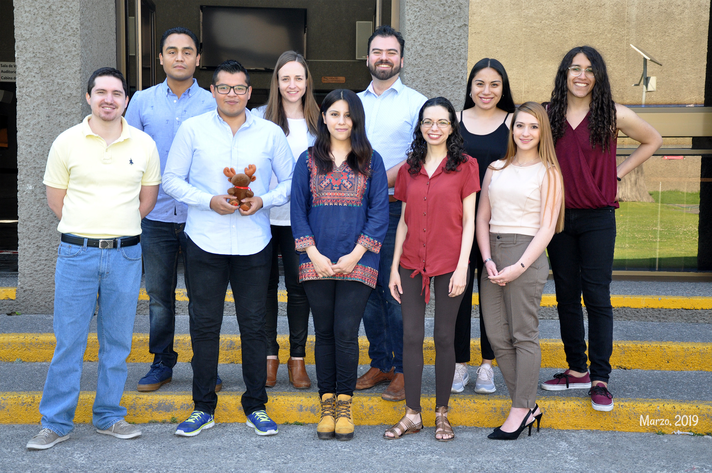

Classification of cocaine dependence using topology of functional connectivity networks
Sofía Fernández Lozano

Collaborators
- Said Jiménez
- Diego Ángeles
- Alan Dávalos
- Ruth Alcalá
- Eduardo Garza

Follow along
https://github.com/soffiafdz/slides

Connectomics
Resting-state fMRI is a promising and powerful neuroimaging technique that can noninvasively measure intrinsic or spontaneous activity in the human brain
In the last decades, it has been widely used to study inter-regional functional connectivity patterns, that is, the functional connectome

With the aid of graph theory approaches, studies have demonstrated that human brain functional networks exhibit many important topology properties that:
- Exhibit important correlations with physiological signatures
- Show individual differences in cognitive behaviours
- Change with:
- development
- aging
- diseases
Cocaine dependence
Drug use (México)
Tobacco: 17.6%
Alcohol: 33.6%
Illicit drugs: 9.9%
Marijuana: 8.6%
Cocaine: 3.5%
Machine Learning
“Machine learning research is part of research on artificial intelligence, seeking to provide knowledge to computers through data, observations and interacting with the world. That acquired knowledge allows computers to correctly generalize to new settings.” -Yoshua Bengio, PhD; Université de Montréal
Methods
Supervised
Trains algorithms
based on example
input/output data
labeled by humans
Unsupervised
No labeled data is provided; find structure within its input data
All sorts of algorithms...
- Stochastic Gradient Descent
- Lasso/Ridge Regression
- ElasticNet
- SVM
- Kmeans
- Naive Bayes
- KNeighbors
- ...
- Stochastic Gradient Descent
- Lasso/Ridge Regression
- ElasticNet
- SVM
- Kmeans
- Naive Bayes
- KNeighbors
- ...
Support Vector Machines
A support vector machine (SVM) is a discriminative classifier formally defined by a separating hyperplane.
Given a labeled training data (supervised learning), the algorithm outputs an optimal hyperplane in a high- or infinite-dimensional space which categorizes new examples.
The best hyperplane is the one that represents the largest separation, or margin, between the two classes.
Best hyperplane

Log vs Hinge loss

Research goal
Employ a Support Vector Machine algorithm to correctly classify cocaine-dependent subjects from healthy controls utilizing global topology metrics of functional brain connectivity as features
Data
For this project we used three independent datasets from three separate studies done in our lab.
Training dataset
To train the model we used the data of a transversal cocaine-dependence study of cocaine-dependent participants vs healthy controls ($n=107$)
Testing dataset
In order to test our model, we made a combined dataset from the data of other two studies:
rTMS clinical trial
$n=34$
social neuroscience study
$n=30$
Neuroimaging data
Sequences
For all the subjects in our data we had:
TR/TE: 7/3.5ms;
180 slices;
voxel: 1mm3;
FOV: 240mm
TR/TE: 2000/30ms;
36 slices;
voxel: 3x3x3.3mm;
FOV: 240mm
Imaging Pre-processing
FMRIPrep & xcpEngine
36 parameters with scrubbing
Graph creation
brainGraph
R package
Power264 atlas
Weighted and undirected graphs
Consensus-based thresholding
$\tau=.3$; $T=50\%$
Graph Metrics
Assortativity
Correlation between the degrees of connected nodes
Characteristic Path Length
Mean minimum number of edges that must be traversed to go from one node to another
Clustering coefficient
Number of connections that exist between the nearest neighbours of a node as a proportion of the maximum number of possible connections
Density
Proportion of present connections from all the posible number of connections

Diameter
Length of the longest path from one node to another

Global Efficiency
Measure of exchange of information across the whole network

Local Efficiency
Network's resistance to failure on a small scale

Modularity
How much do the network can be subdivided into smaller modules

Transitivity
Normalized variant of the clustering coefficient
Strength
Sum of all neighboring link weights
Vulnerability
Assessment of damage to the network after removing of a node

Support Vector Classifier
Data preprocessing
Feature scaling:
Median removal and scaling according to the IQR
from sklearn import preprocessing
X_train = X_train.apply(lambda x : preprocessing.robust_scale(x))
X_test = X_test.apply(lambda x : preprocessing.robust_scale(x))
Scikit-learn: LinearSVC
import numpy as np
from sklearn import model_selection, svm
classifier = svm.LinearSVC(random_state = 666, max_iter = 150000)
parameters = {
'C' : np.linspace(1, 15, 141)
'loss' : ['hinge', 'squared_hinge']
}
cv = model_selection.GridSearchCV(
classifier, parameters, cv = 40, iid = False
)
cv.fit(X_train, y_train)
Cross validation results
Best parameters
C: 1.4
Loss: Hinge
CV accuracy:
0.96
Testing of model
| Precision | Recall | F1-score | Support | |
|---|---|---|---|---|
| CU | 0.71 | 0.94 | 0.81 | 34 |
| HC | 0.89 | 0.57 | 0.69 | 30 |
| Accuracy | 0.77 | 64 | ||
| Macro avg | 0.8 | 0.75 | 0.75 | 64 |
| Weighted avg | 0.8 | 0.77 | 0.76 | 64 |
Confusion matrix

Conclusions
Even though it was a relatively small sample and the datasets were independent, the model performed well in the classification.
Global measures of brain connectivity and network science analysis are good candidates for biomarkers in mental diseases
Future research might be useful into exploring the underlying network topology and dynamics to better understand and treat addiction